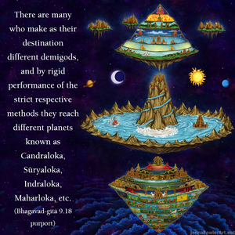
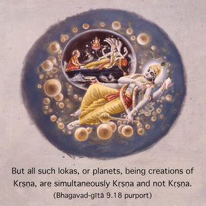
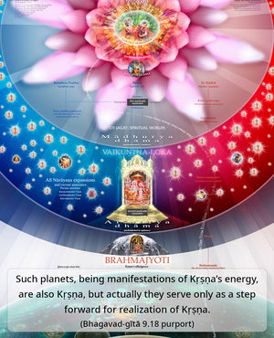
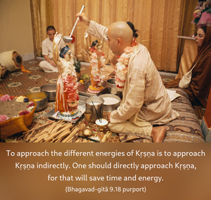

I am the goal, the sustainer, the master, the witness, the abode, the refuge and the most dear friend. I am the creation and the annihilation, the basis of everything, the resting place and the eternal seed.




Gati means the destination where we want to go. But the ultimate goal is Kṛṣṇa, although people do not know it. One who does not know Kṛṣṇa is misled, and his so-called progressive march is either partial or hallucinatory. There are many who make as their destination different demigods, and by rigid performance of the strict respective methods they reach different planets known as Candraloka, Sūryaloka, Indraloka, Maharloka, etc. But all such lokas, or planets, being creations of Kṛṣṇa, are simultaneously Kṛṣṇa and not Kṛṣṇa. Such planets, being manifestations of Kṛṣṇa’s energy, are also Kṛṣṇa, but actually they serve only as a step forward for realization of Kṛṣṇa. To approach the different energies of Kṛṣṇa is to approach Kṛṣṇa indirectly. One should directly approach Kṛṣṇa, for that will save time and energy. For example, if there is a possibility of going to the top of a building by the help of an elevator, why should one go by the staircase, step by step? Everything is resting on Kṛṣṇa’s energy; therefore without Kṛṣṇa’s shelter nothing can exist. Kṛṣṇa is the supreme ruler because everything belongs to Him and everything exists on His energy. Kṛṣṇa, being situated in everyone’s heart, is the supreme witness. The residences, countries or planets on which we live are also Kṛṣṇa. Kṛṣṇa is the ultimate goal of shelter, and therefore one should take shelter of Kṛṣṇa either for protection or for annihilation of his distress. And whenever we have to take protection, we should know that our protection must be a living force. Kṛṣṇa is the supreme living entity. And since Kṛṣṇa is the source of our generation, or the supreme father, no one can be a better friend than Kṛṣṇa, nor can anyone be a better well-wisher. Kṛṣṇa is the original source of creation and the ultimate rest after annihilation. Kṛṣṇa is therefore the eternal cause of all causes.